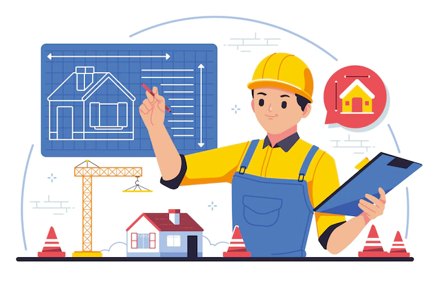

Unidad 2 - Practica 9
Practica 1
Practica 2
Practica 3
Practica 4
Practica 8
CV
video
Dirreción
Datos
Datos personales
Nombre completo: Martinez Molina Jorge Eduardo
Fecha de nacimiento: 25/05/2001
Lugar de nacimiento: Orizaba, Veracruz
Formación académica
2016-2019 Escuela Secundaria Técnica 84
2013-2016 Colegio Preparatorio de Orizaba
2020-2025 Instituto Tecnológico de Orizaba
Experiencia laboral
2025-2028 Programador de la compañia Google (3 años)
2028-2029 Administrador de desarrollo de software (1 año)
2031-2033 Gerente de proyecto de tecnologías de la información (2 años)
Curriculum vitae
